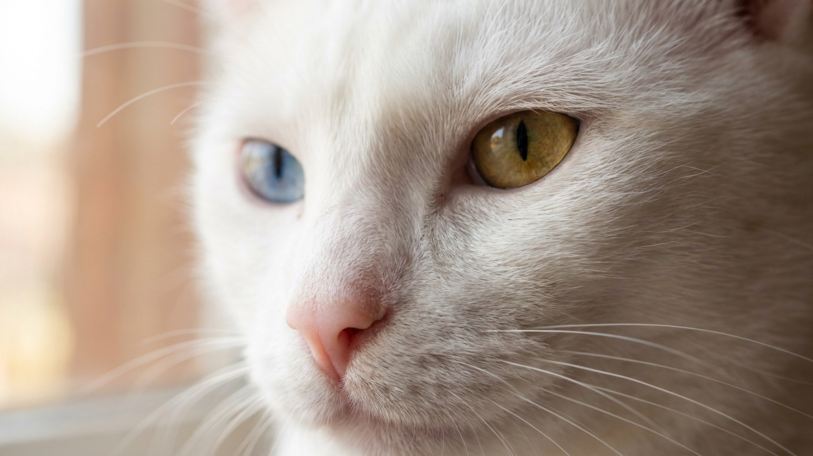

Представьте кошку без единого тёмного пятна — белоснежную, с одним голубым и одним золотым глазом. Именно такой веками видели као-мани при дворе сиамских королей: порода считалась приносящей удачу и оставалась закрытой для простых смертных. Сегодня као-мани — одна из редчайших пород в мире. Ниже — честный портрет: внешность, характер, уход и на что важно обратить внимание перед тем, как завести такую кошку.
Као-мани — короткошёрстная кошка среднего размера с мускулистым, но изящным телосложением. Шерсть всегда чисто-белая, плотная и блестящая — без кремовых или серых оттенков. Именно эта белизна в сочетании с особыми глазами дала породе второе имя — «кошка-бриллиант».
Као-мани — не та порода, что дремлет в углу. Это активная, любопытная кошка, которая следует за хозяином по квартире и умеет голосом выражать своё мнение. Её нередко сравнивают с сиамскими породами по коммуникабельности.
🐾 У вас као-мани?
AnimaLife соберёт уход под породу: к каким болезням есть склонность, что проверять по возрасту, чем кормить и когда пора к врачу. Бесплатно, прямо в мессенджере.
Собрать план ухода → Собрать в MAX →
У вас iPhone? AnimaLife есть в App Store
Короткая шерсть — главное удобство породы. Уход минимальный по сравнению с полудлинношёрстными породами, но белый окрас требует внимания к чистоте.
Белые кошки с голубыми глазами — независимо от породы — чаще рождаются с врождёнными особенностями слуха. Это связано с генетикой пигментации: клетки, отвечающие за белый окрас, влияют и на структуру внутреннего уха.
🐾 Ваш питомец — као-мани?
Заведите профиль в AnimaLife: приложение запомнит породу, возраст и вес и будет подсказывать по уходу именно для неё. Вопросы AI-ветеринару — круглосуточно и бесплатно.
Завести профиль → Завести в MAX →
У вас iPhone? AnimaLife есть в App Store
🐾 Понравился разбор?
Подпишитесь на канал — каждый день разбираем по одному тревожному симптому у кошек и собак: что в пределах нормы, а когда пора к врачу. Подпишитесь, чтобы не пропустить разбор, который может спасти здоровье вашего питомца.
Порода подходит людям, которые хотят настоящего партнёра, а не декоративное животное. Као-мани требует времени, общения и присутствия. Если вы готовы к этому — она ответит преданностью и живым характером. Не подходит тем, кто часто уезжает или предпочитает независимую кошку, которой достаточно еды и спокойствия.
Материал носит информационный характер и не заменяет очную консультацию ветеринара.